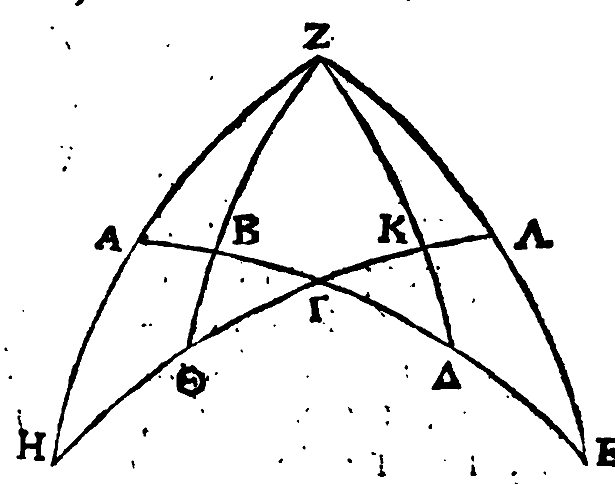

Proposition II.11 — Theorem: Symmetry of Polar Interceptions¶
Menelai Alexandrini Sphaericorum Lib. II Prop. XI (Halley 1758, pp. 76–77)


Enunciation (Halley 1758, p. 76)
Let two great circles on a sphere intersect one another, and on one of them let two arcs be taken equidistant from the point of intersection of those two circles; and through the endpoints of these arcs, and through the poles of either of the circles, let great circles pass: these circles shall cut off equal arcs from the other of the first circles.
Let \(\mathrm{ABE}\), \(\mathrm{H\Theta\Lambda}\) be two great circles of the sphere intersecting one another at point \(\mathrm{\Gamma}\), and on one of them let arcs \(\mathrm{AB}\), \(\mathrm{\Delta E}\) be taken equidistant from point \(\mathrm{\Gamma}\); and let great-circle arcs be drawn passing through points \(\mathrm{A}, \mathrm{B}, \mathrm{\Delta}, \mathrm{E}\) and through \(\mathrm{Z}\), the pole of either of the circles \(\mathrm{ABE}\), \(\mathrm{H\Gamma\Lambda}\); let these arcs be \(\mathrm{ZAH}\), \(\mathrm{ZB\Theta}\), \(\mathrm{ZK\Delta}\), \(\mathrm{Z\Lambda E}\): I say that arc \(\widehat{\mathrm{H\Theta}}\) is equal to arc \(\widehat{\mathrm{K\Lambda}}\).
Let us first suppose \(\mathrm{Z}\) to be the pole of circle \(\mathrm{AB\Delta E}\); wherefore each of the angles \(\angle \mathrm{\Gamma AH}\), \(\angle \mathrm{\Lambda E\Gamma}\) will be a right angle. And angle \(\angle \mathrm{A\Gamma E}\) is equal to angle \(\angle \mathrm{A\Gamma H}\); and also arc \(\widehat{\mathrm{A\Gamma}}\) is equal to arc \(\widehat{\mathrm{\Gamma E}}\): wherefore arc \(\widehat{\mathrm{\Gamma H}}\) is equal to arc \(\widehat{\mathrm{\Gamma\Lambda}}\). By the like argument
f. 0093 · p. 77it shall be established that arc \(\widehat{\mathrm{\Theta\Gamma}}\) is equal to arc \(\widehat{\mathrm{K\Gamma}}\); the remaining arc \(\widehat{\mathrm{\Theta H}}\) is therefore equal to arc \(\widehat{\mathrm{K\Lambda}}\).
Now let us suppose point \(\mathrm{Z}\) to be the pole of circle \(\mathrm{\Lambda\Gamma H}\); and the two angles \(\angle \mathrm{AH\Gamma}\), \(\angle \mathrm{\Gamma\Lambda E}\) will be right angles. Moreover angle \(\angle \mathrm{A\Gamma H}\) is equal to angle \(\angle \mathrm{\Lambda\Gamma E}\), as arc \(\widehat{\mathrm{A\Gamma}}\) is equal to arc \(\widehat{\mathrm{\Gamma E}}\); and the two arcs \(\widehat{\mathrm{AH}}\), \(\widehat{\mathrm{\Lambda E}}\) taken together are not equal to a semicircle, since each is less than a quadrant: therefore arc \(\widehat{\mathrm{H\Gamma}}\) (by Book I Prop. 16) is equal to arc \(\widehat{\mathrm{\Gamma\Lambda}}\). And in the like manner it shall be demonstrated that arc \(\widehat{\mathrm{\Theta\Gamma}}\) is equal to arc \(\widehat{\mathrm{\Gamma K}}\): therefore the remaining arc \(\widehat{\mathrm{\Theta H}}\) is equal to \(\widehat{\mathrm{K\Lambda}}\). Quod erat demonstrandum.